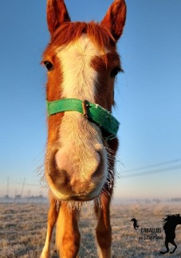
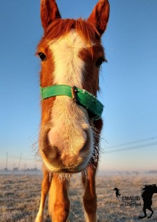

Nuestro trabajo ha ayudado a mejorar la calidad de vida de cientos de caballos
+500
Rescates
15
Voluntarios
10
En tratamiento
10
Años
Sobre nosotros
━━━━
Caballos en libertad nació hace 10 años como una Asociación civil sin fines de lucro, nos ubicamos en Zona Sur ciudad de La Plata, uno de los principales epicentros de maltrato y abandono equino.
Nuestra ONG cuenta con el apoyo de una eminencia en veterinaria, el doctor Juan Oliden, que junto a nuestros voluntarios y a la colaboración ciudadana nos encargamos de brindarles a nuestros rescatados la atención, el amor y la medicación que en algunos casos corresponde.
Con la esperanza de un día verlos libres, felices y sin ser utilizados como objetos para la tracción a sangre, esperamos poder construir un futuro libre de crueldad animal, en donde cada persona aporte su granito de arena y participe en casos de indiferencia o maltrato a cualquier ser vivo.
Por un futuro con derechos e igualdad para todos los animales.
Ya rescatamos más de 500 caballos. Conocé sus historias
━━━━


 

Trabajamos en equipo para cambiar su pasado por un presente de libertad y respeto.
¡Con tu ayuda podemos salvar a muchos más!
Colaborá con la fundación
━━━━
Podés hacer donaciones o trabajar como voluntario. También podés ayudar compartiendo este sitio para que más personas se sumen.
Alimentos y necesidades
Transferencias o depósitos bancarios
Insumos médicos
Apadrinar
Colaboradores casuales


Sé parte de nuestro equipo
━━━━
Área de logística
- Encargado de logística de alimento y/o de viruta.
- Traslado de voluntarios al predio en casos excepcionales o de urgencia.
- Traslado de equinos.
- Colecta y traslado de donaciones.
Área fuera del campo
- Generador/a de ideas para recaudar fondos.
- Administrador/a de redes.
- Aportando conocimientos de tu profesión y/o dictando cursos a beneficio.
- Manejo de Photoshop para diseño de flyers.
Área dentro del campo
- Alimentación.
- Cuidado y curación de los rescatados.
- Guardias nocturnas.
- Levantarlos si no pueden.
Convertite en voluntario
━━━━
Buscamos personas que estén comprometidos con la causa y tengan conocimientos en:
- Marketing digital
- Veterinaria
- Trabajo con caballos en el campo
- Posean licencia de conducir
No poseemos ningún tipo de subsidios por parte del Estado. Realizamos nuestra tarea gracias al aporte de la gente.
Encontranos por acá
━━━━
UBICACIÓN
La Plata, Buenos Aires
TELÉFONO
+54 9 221 638-3686
+54 9 221 626-6428
+54 9 11 3106-6232
caballosenlibertad@hotmail.com.ar